A bexiga é um órgão do sistema urinário e varia em tamanho, formato, posição e relações de acordo com seu conteúdo e com o estado das vísceras adjacentes.
Desempenha dois papéis principais:
Armazenamento temporário de urina – a bexiga é um órgão oco com paredes distensíveis. A micção pode ocorrer, no entanto, já quando o enchimento da bexiga urinária for de 150 a 200 ml; em mulheres grávidas, devido à pressão do útero, pode ocorrer com um volume ainda menor de urina.
Possui um revestimento muscular interno, que permite acomodar em média entre 400-600ml e no máximo até 700 ml de urina em adultos saudáveis.
Auxilia na expulsão da urina – a musculatura da bexiga se contrai durante a micção, com concomitante relaxamento dos esfíncteres.
Quando vazia, a bexiga urinária do adulto está localizada na pelve menor, situada parcialmente superior e posterior ao púbis.
Está em um espaço virtual denominado espaço retropúbico (de Retzius) e situa-se principalmente sobre a próstata (homens) ou parede anterior da vagina (mulheres) podendo estar ou não abaixo do útero (dependendo da posição deste órgão).
À medida que se enche, a bexiga urinária entra na pelve maior enquanto ascende no tecido adiposo extraperitoneal da parede abdominal anterior.
Em alguns indivíduos, a bexiga urinária cheia pode chegar até o nível do umbigo.
Nos homens, a face de contato da bexiga urinária com a lâmina muscular do diafragma da pelve (especialmente do M. levantador do ânus e sua fáscia) é menor do que na mulher, porque no homem a próstata também se encontra na pelve menor.
Se o tônus e a tensão do diafragma da pelve diminuírem, por exemplo, devido a traumatismo durante um parto vaginal, pode ocorrer, como consequência, queda da bexiga urinária com subsequente incontinência.
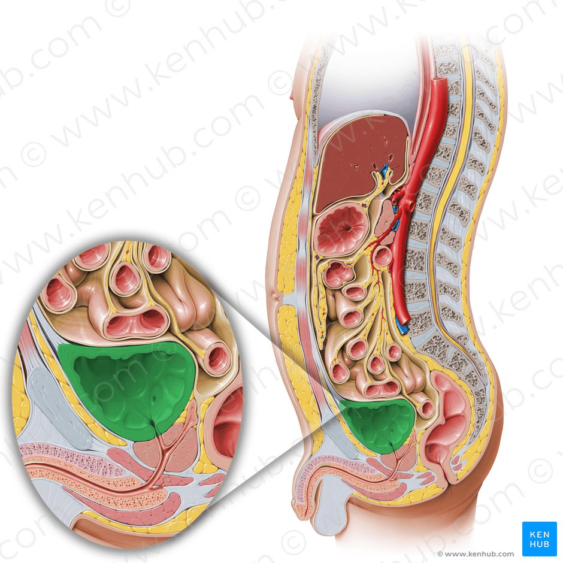
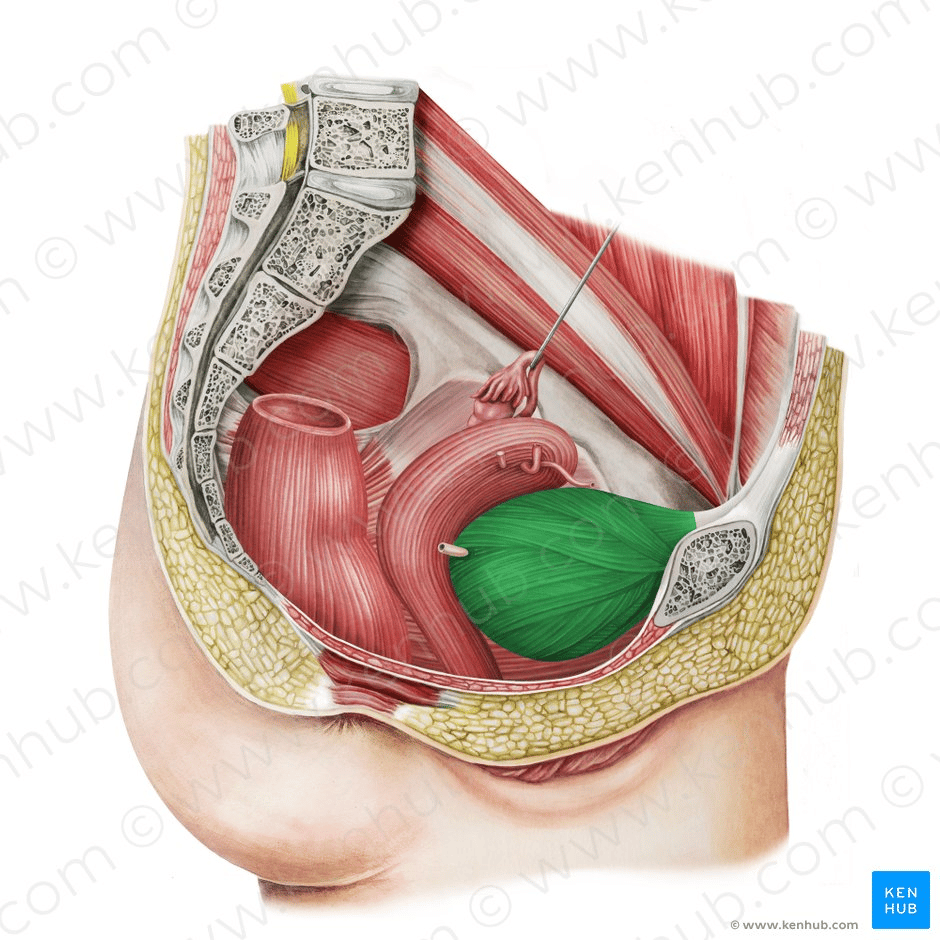
Morfologia externa
Quando vazia (em A), a bexiga urinária tem um formato ovalado, quando contraída (em B) possui o formato de um barco.
Externamente tem ápice, corpo, fundo e colo.
- Ápice – localizado superiormente, apontando para a sínfise púbica. Está ligado ao umbigo pelo ligamento umbilical mediano (um remanescente do úraco);
- Corpo – parte principal da bexiga, localizada entre o ápice e o fundo;
- Fundo (ou base) – localizado posteriormente. É de forma triangular, com a ponta do triângulo apontando para trás;
- Colo – formado pela convergência do fundo e das duas superfícies inferolaterais. É contínuo com a uretra.
A bexiga urinária ainda apresenta quatro faces:
Superior, duas infero-laterais e posterior.
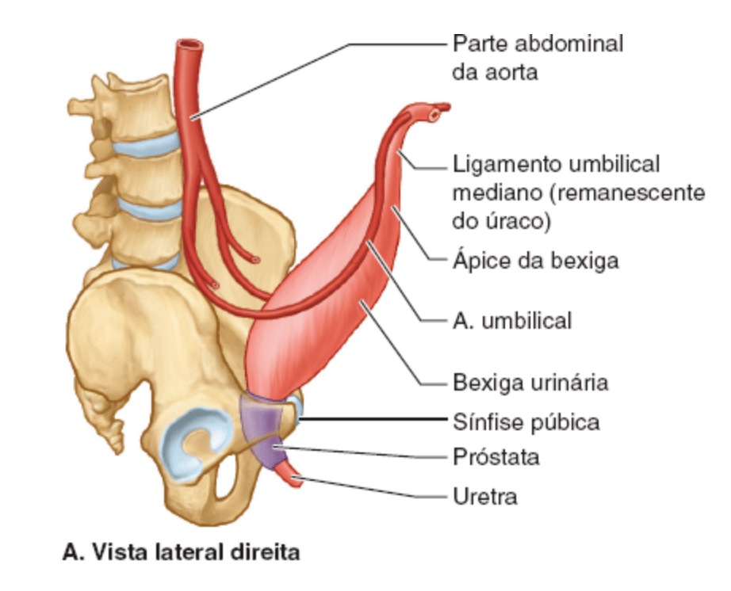
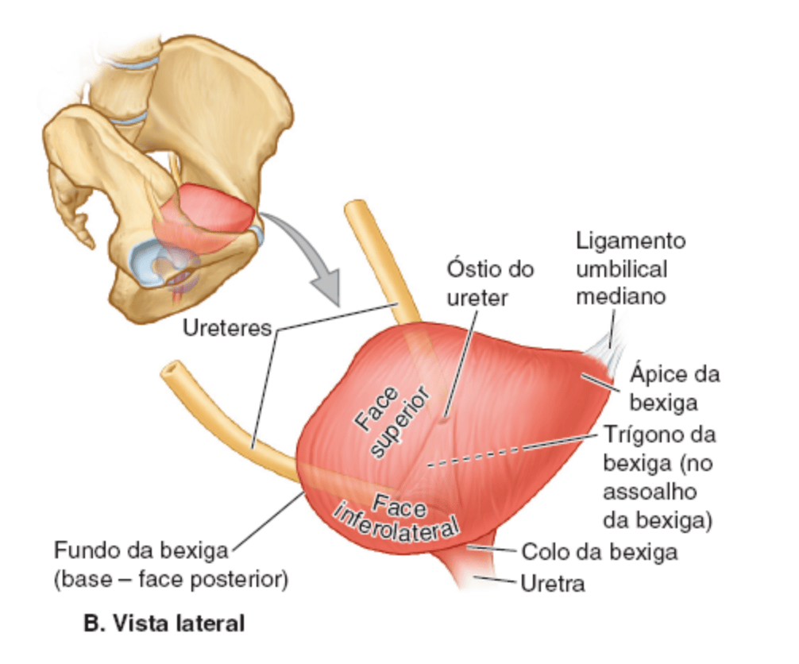
O leito da bexiga é formado pelas estruturas que têm contato direto com ela.
De cada lado, os púbis, a fáscia que reveste o músculo levantador do ânus e a parte superior do músculo obturador interno estão em contato com as faces infero-laterais da bexiga urinária.
Apenas a face superior é coberta por peritônio.
Assim, nos homens o fundo da bexiga é separado do reto centralmente apenas pelo septo retovesical fascial e lateralmente pelas glândulas seminais e ampolas dos ductos deferentes.
Nas mulheres, o fundo da bexiga tem relação direta com a parede ântero-superior da vagina.
A bexiga urinária é revestida por uma fáscia visceral de tecido conjuntivo frouxo.
O peritônio quando se estende sobre a face superior da bexiga urinária e se reflete, forma de uma bolsa peritoneal e dá origem à dois tipos de escavação ou bolsa em mulheres e um tipo nos homens:
- Na mulher:
Escavação / Bolsa vesicouterina = sobre a parede anterior do útero;
Escavação / Bolsa retouterina = posteriormente ao útero.
- No homem:
Escavação / Bolsa retovesical sobre a parede anterior do reto.
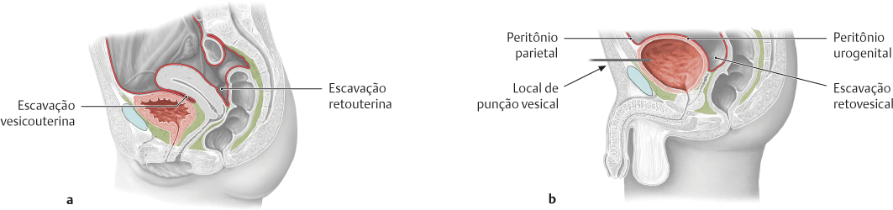
Bolsa ou Saco de Douglas
Foi descrita pelo anatomista escocês James Douglas e nomeada na época como Excavatio recto-uterina ou fossa douglassi em latim.
Representa a escavação retouterina para as mulheres (Separa a parte supravaginal do colo do útero e o corpo do útero do colo sigmoide e do reto);
E nos homens corresponde a escavação retovesical que é o espaço entre face posterior da bexiga e o reto.
Nas mulheres pode ser palpada posteriormente na parte superior de um toque vaginal. É normal ter até 5ml de líquido nessa bolsa, após a ovulação, mais do que isso pode indicar um sangramento abdominal.
Nos homens pode ser palpada em anteriormente em toque retal.
Como os líquidos tendem a descer para essa bolsa, examinar a presença de líquido na bolsa / saco de Douglas é importante para o diagnóstico de hemorragia abdominal, ascite, endometriose, peritonite e outras doenças que causem secreção de líquido intra-abdominal como tumores e infecções purulentas na cavidade abdominal.
A avaliação desta área pode ser feita através de exames de imagem (USG, RM, TC) ou no exame especular para mulheres.
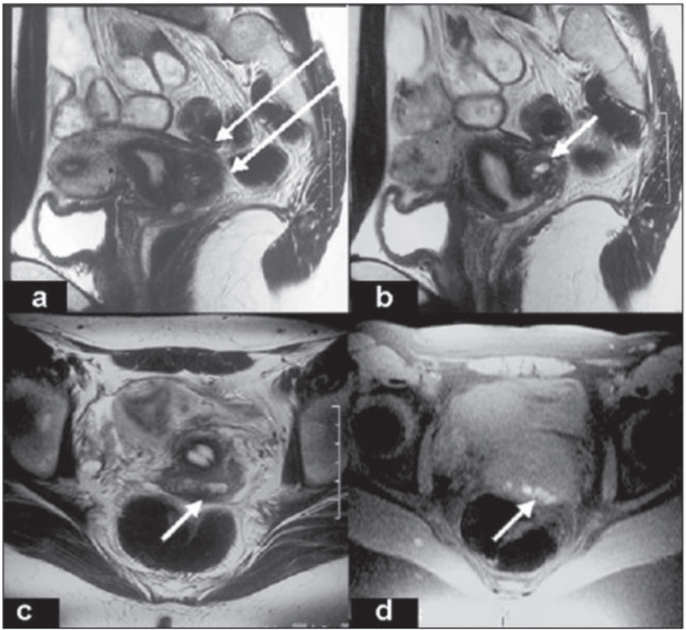
Morfologia interna
A urina entra na bexiga através dos ureteres esquerdo e direito e sai pela uretra.
Internamente, esses orifícios são marcados pelo trígono – uma área triangular localizada dentro do fundo da bexiga.
Em contraste com o resto da bexiga interna, o trígono tem paredes lisas (devido sua origem embriológica diferente: o trígono é desenvolvido pela integração de dois ductos mesonéfricos na base da bexiga).
Os óstios do ureter e o óstio interno da uretra estão nos ângulos do trígono da bexiga.
Os óstios do ureter são circundados por alças do músculo detrusor, que se contraem quando a bexiga urinária se contrai para ajudar a evitar o refluxo de urina para o ureter.
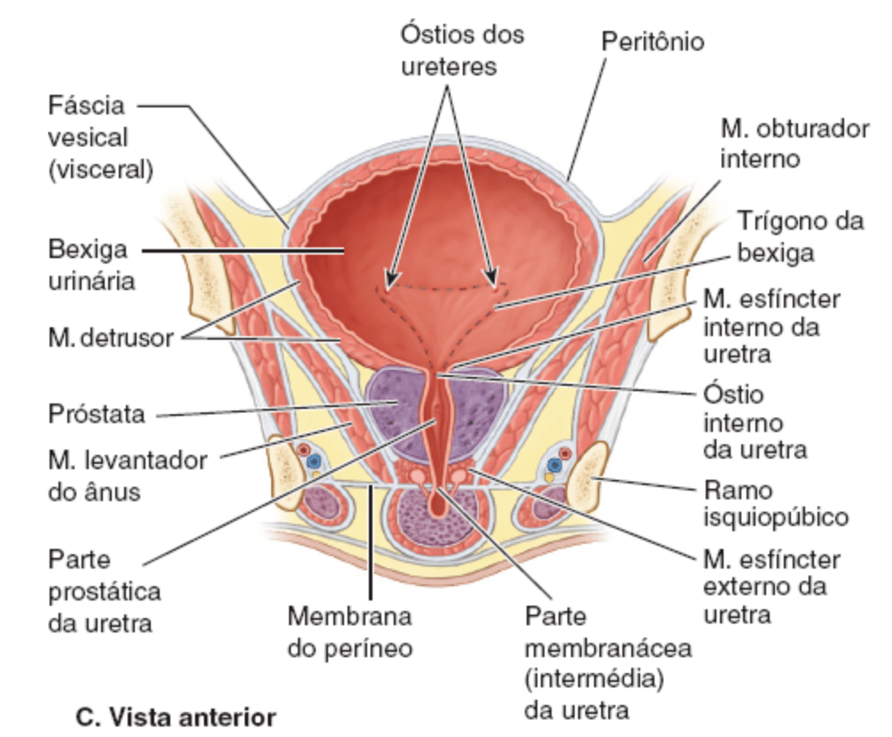
A úvula da bexiga é uma pequena elevação do trígono.
Geralmente é mais proeminente em homens idosos por causa do aumento do lobo posterior da próstata.
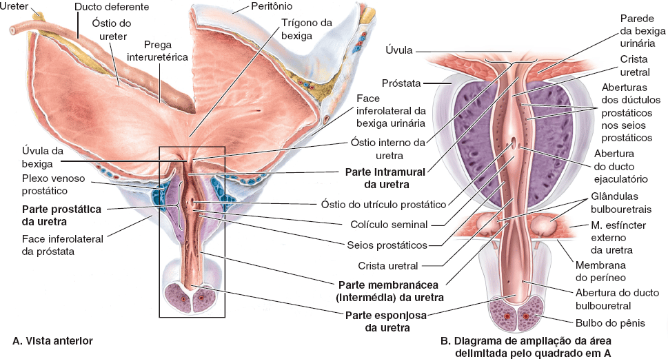
Músculos
Os músculos da bexiga consistem essencialmente em:
- M. detrusor da bexiga
- M. esfíncter interno da uretra.
As paredes da bexiga urinária são formadas principalmente pelo músculo detrusor.
Em direção ao colo da bexiga masculina, as fibras musculares formam o músculo esfíncter interno da uretra involuntário.
Esse esfíncter se contrai durante a ejaculação para evitar a ejaculação retrógrada (refluxo ejaculatório) do sêmen para a bexiga urinária.
Algumas fibras seguem radialmente e ajudam na abertura do óstio interno da uretra.
Nos homens, as fibras musculares no colo da bexiga são contínuas com o tecido fibromuscular da próstata, ao passo que nas mulheres essas fibras são contínuas com fibras musculares da parede da uretra.
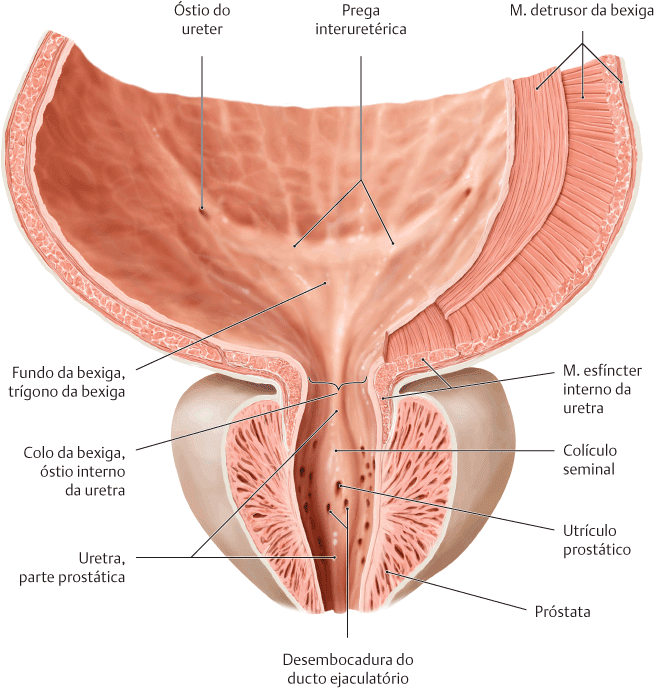
O Músculo detrusor tem três camadas e ajuda significativamente a ancorar a bexiga urinária posterior e anteriormente na pelve.
Sua camada muscular longitudinal externa junto com o M. vesicoprostático (ou vesicovaginal) posteriormente e, na região do nodus vesicae, anteriormente com o M. pubovesical.
As camadas Circular (média) e longitudinal interna terminam posteriormente acima da prega interuretérica.

Vascularização
Artérias
A bexiga urinária recebe principalmente ramos das artérias ilíacas internas.
As artérias vesicais superiores irrigam as partes ântero-superiores da bexiga urinária.
Nos homens, as artérias vesicais inferiores irrigam o fundo e o colo da bexiga.
Nas mulheres, as artérias vaginais substituem as artérias vesicais inferiores e enviam pequenos ramos para as partes póstero-inferiores da bexiga urinária.
As artérias obturatória e glútea inferior também enviam pequenos ramos para a bexiga urinária.
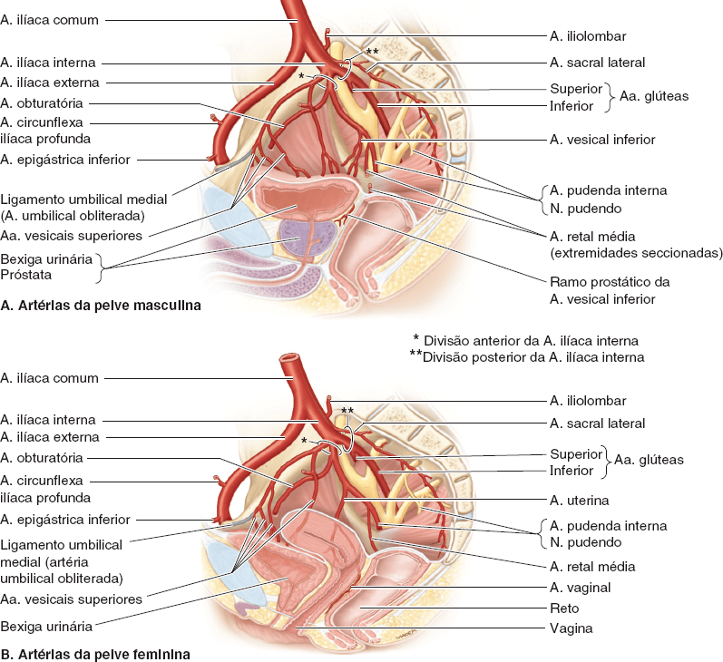
Veias
As veias correspondem às artérias e são tributárias das veias ilíacas internas.
Nos homens, o plexo venoso vesical é contínuo com o plexo venoso prostático e o conjunto de plexos associados envolve o fundo da bexiga e a próstata, as glândulas seminais, os ductos deferentes e as extremidades inferiores dos ureteres.
Também recebe sangue da veia dorsal profunda do pênis, que drena para o plexo venoso prostático.
O plexo venoso vesical é a rede venosa que tem associação mais direta à própria bexiga urinária.
Drena principalmente através das veias vesicais inferiores para as veias ilíacas internas; entretanto, pode drenar através das veias sacrais para os plexos venosos vertebrais internos.
Nas mulheres, o plexo venoso vesical envolve a parte pélvica da uretra e o colo da bexiga, recebe sangue da veia dorsal do clitóris e comunica-se com o plexo venoso vaginal ou uterovaginal.
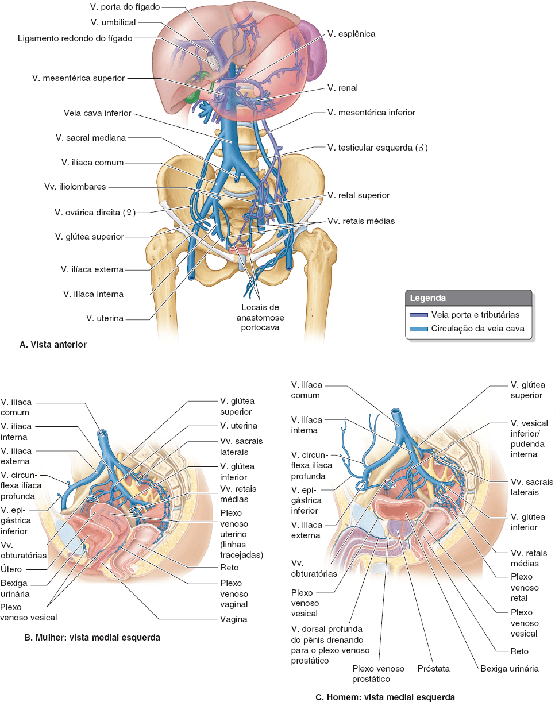
Inervação
As fibras simpáticas são conduzidas dos níveis torácico inferior e lombar superior da medula espinal até os plexos vesicais (pélvicos), principalmente através dos plexos e nervos hipogástricos;
Enquanto as fibras parassimpáticas dos níveis sacrais da medula espinal são conduzidas pelos nervos esplâncnicos pélvicos e pelo plexo hipogástrico inferior.
As fibras parassimpáticas são motoras para o músculo detrusor e inibitórias para o músculo esfíncter interno da uretra na bexiga urinária masculina.
Quando as fibras aferentes viscerais são estimuladas por estiramento, ocorre contração reflexa da bexiga urinária, relaxamento do músculo esfíncter interno da uretra (nos homens) e a urina flui para a uretra.
A inervação simpática que estimula a ejaculação causa simultaneamente a contração do músculo esfíncter interno da uretra para evitar refluxo de sêmen para a bexiga urinária.
As fibras sensitivas (fibras aferentes reflexas) da maior parte da bexiga urinária são viscerais, seguem o trajeto das fibras parassimpáticas, do mesmo modo que aquelas que transmitem sensações de dor (como a resultante da hiperdistensão) da parte inferior da bexiga urinária.
A face superior da bexiga urinária é coberta por peritônio e, portanto, está acima da linha de dor pélvica.
Assim, as fibras de dor da parte superior da bexiga urinária seguem as fibras simpáticas retrogradamente até os gânglios sensitivos de nervos espinais torácicos inferiores e lombares superiores (T11 a L2 ou L3).